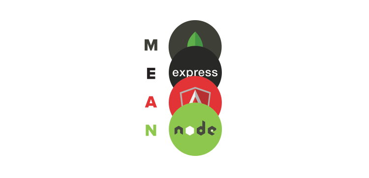
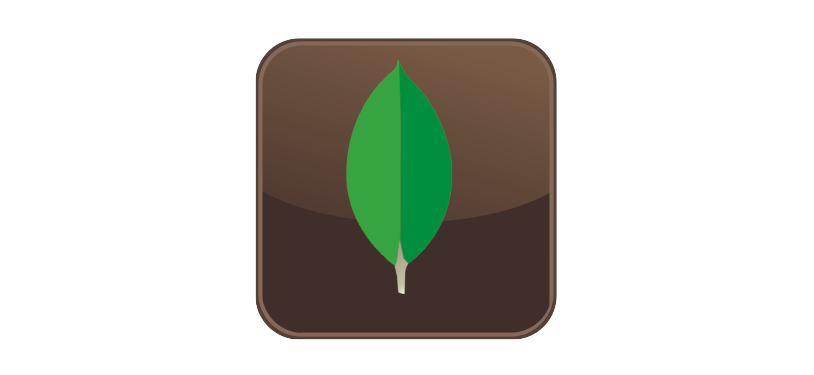
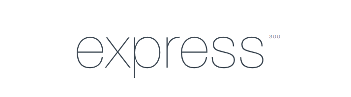

Full Stack JavaScript development. The one known as Stack MEAN
With the rise of AngularJS, a new stream is emerging in JavaScript development from start to finish. The so-called MEAN stack. With end-to-end development we refer to using JS in all the parts that make up a current web application: Frontend, Backend and Database.
The acronym MEAN comes from (M) ongo + (E) xpress + (A) ngular + (N) ode
MongoDB
Mongo is an open source non-relational database (NoSQL) that stores the data in JSON-type documents (JavaScript Object Notation) but in binary form (BSON) to make the integration in a faster way. You can execute JavaScript operations in your console instead of SQL queries. It also has a great integration with Node.js with the own drivers and with Mongoose. Due to its flexibility it is very scalable and helps the agile development of web projects.
ExpressJS
Express is a framework above Node.js that allows you to create web servers and receive HTTP requests in a simple way, which also allows you to create REST APIs quickly.
AngularJS
Angular is a JS framework for the client part or Frontend of a web application, which respects the MVC paradigm and allows to create Single-Page Applications (Web applications that do not need to reload the page), more or less easily. It is a project maintained by Google and is currently very booming.
Nodejs

Node It is a programming environment in JavaScript for the Backend based on the JavaScript V8 engine of the Google Chrome browser and oriented to non-blocking events, which makes it very fast when creating web servers and using real time. It was created in 2009 and although it is still young, the latest versions make it more robust in addition to the large community of developers that it has. It is not only used on the server, it has been extended so much that it is used in Stylus, a CSS preprocessor, in Grunt a task manager based on JavaScript and in several other things like tests, etc ...
One of the main advantages of MEAN is that it uses the same programming language in all parts of the application, which allows a person to manage in all areas of a modern web application even if they specialize in one of them. In this way, we collaborate more in the projects and the development is more continuous.
This, added to automated tests and unit tests, git repositories such as GitHub or Bitbucket, continuous integration servers and PaaS like Heroku or Nodejitsu make modern web development more fun and agile.
There are several application skeleton projects with the MEAN stack, one of the best known is MEAN.io. For my part I am developing my own MEAN Boilerplate (with casinos and forks) with these properties adding Redis for the storage of sessions and Stylus as a CSS preprocessor. I also use PassportJS for login and registration with Facebook and Twitter. The project is on GitHub and I encourage you to collaborate or to use it in your projects.